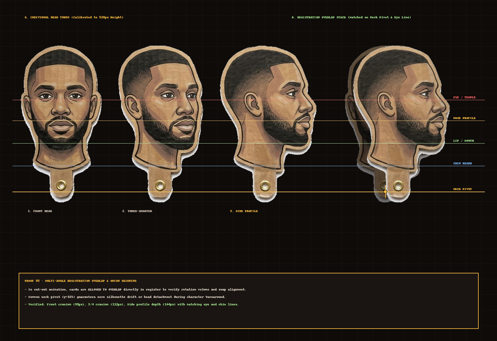
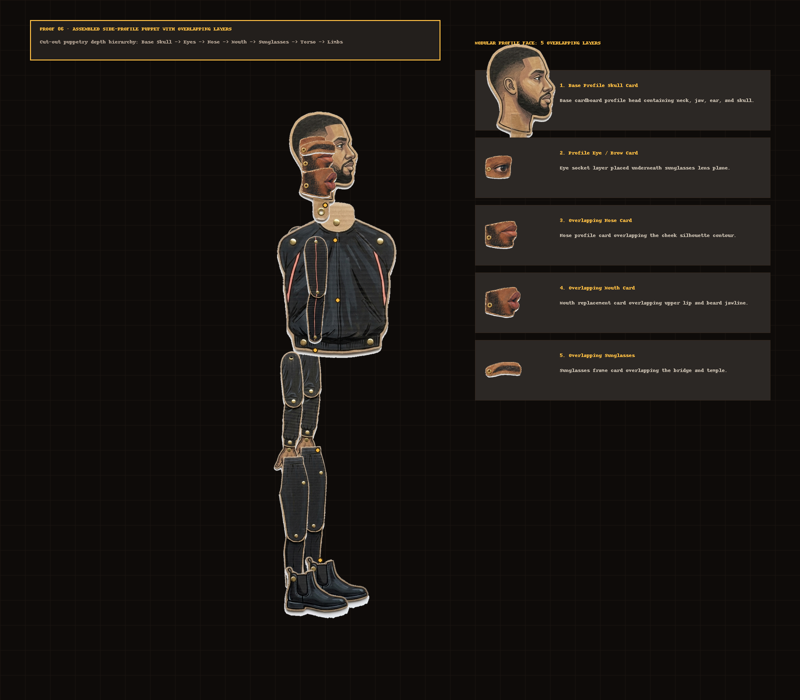
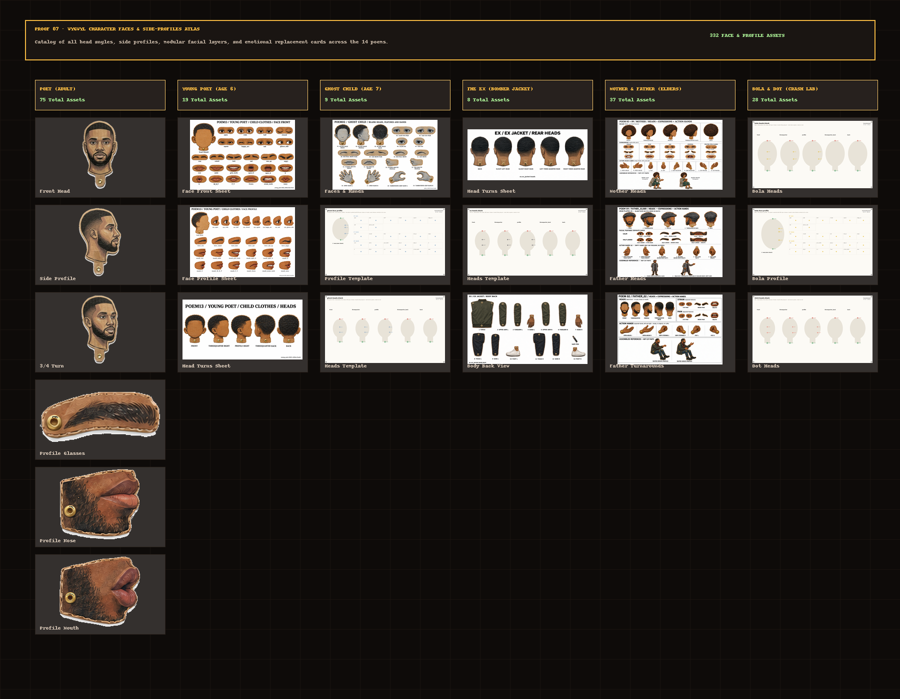

Registration Overlap Controls
Poet Emotion Replacement Swaps
Proof 08: Side-Profiles Matched Overlap & Cast Inventory
1:1 Overlap CalibratedFocus on Side Profiles: 1) Full visual accounting of faces for every character, 2) Cardboard depth stacking (Nose & Glasses overlap cheek and bridge), 3) Multiple distinct profile faces matched directly ON TOP OF EACH OTHER with onion-skin transparency.

Proof 09: Complete Assembled Side-Profile Puppet
Proper Z-DepthFully assembled side-profile Poet puppet in action. Verifies: 1) Hands hang ON TOP of the legs (Layer 6 > Layer 5, NOT clipping inside!), 2) Modular facial pieces overlap in depth, 3) 1:1 scale calibrated against reference.

Proof 05: Multi-Angle Registration Overlap
Neck Pivot MatchedFront, 3/4, and Side Profile heads matched on top of each other with onion-skin transparency. Proves shared neck pivot (y=92%) and horizontal alignment for eye, nose, mouth, and chin across the turnaround.


Proof 06: Assembled Side-Profile Puppet
5 Overlapping LayersFully assembled side-profile Poet puppet. Shows modular depth layering: Base Skull → Profile Eyes → Overlapping Nose → Overlapping Mouth → Overlapping Sunglasses → Profile Torso & Limbs.


Proof 07: WYGWYL Character Faces & Profiles Atlas
Exhaustive visual inventory of face sheets, side profiles, head turnarounds, and emotional replacements across the 14 spoken-word poems.


Character Cast Face & Profile Directory
10 Character Cast Groups1. Poet (Adult Tracksuit)
Red/black tracksuit, dark sunglasses, beard. Full 5-head turnaround (front, 3/4 R, profile R, 3/4 back, back), modular profile face sheet with 6 noses, 6 mouths, 6 sunglasses, 8 eyes.
2. Young Poet (Age 6)
Childhood memory in striped shirt & shorts (Poem 02 Flashing Lights, Poem 13). 27 modular profile pieces (8 eyes, 6 spectacles, 6 noses, 6 mouths, 1 base skull), 5-head turnaround, profile walking body.
3. Ghost Child (Age 7)
Ethereal pale nightclothes, drifting spirit handing the brass tambourine through the window (Poem 02). Front faces & hands, profile templates, ethereal replacements.
4. The Ex (Bomber Jacket)
Bomber jacket, holding vape pen, seen from behind falling into the abyss (Poem 01, 03). Head turnaround sheet, profile head templates, body back view.
5. Mother (Teal Dress & Cardigan)
Seated in floral armchair on phone with poet (Poem 02, 09, 13). Front face sheet, profile face sheet, heads & hands sheet, profile sitting body.
6. Father & Ancestor Elders
Long grey coat, flat cap, wooden cane, walking east toward sunrises (Poem 09). Father heads & hands, turnaround sheets, elder robes, walking profile body.
7. Bola & Dot (Crash Lab)
The articulated Crash Lab pair. Front face sheets, profile face sheets, head turnarounds, and profile bodies for both yellow suit and cyan suit.
8. DJ Cyber & Party Guests
Naraka Market basement club (Poem 07, 08). DJ cyber profile body, headphone variants, club jackets, party guest face-feet sheets, vintage turnarounds.